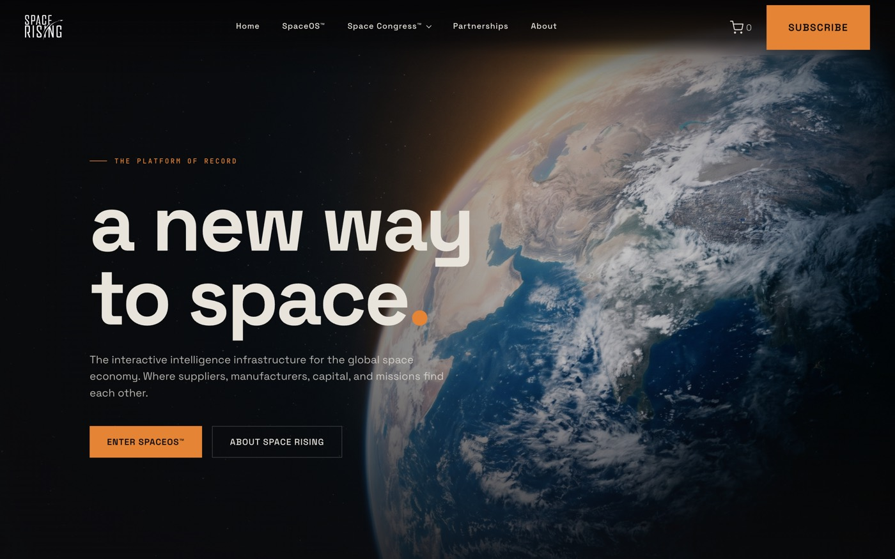
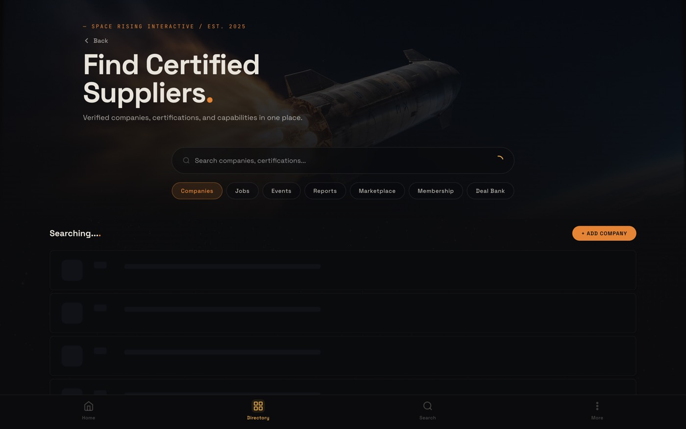
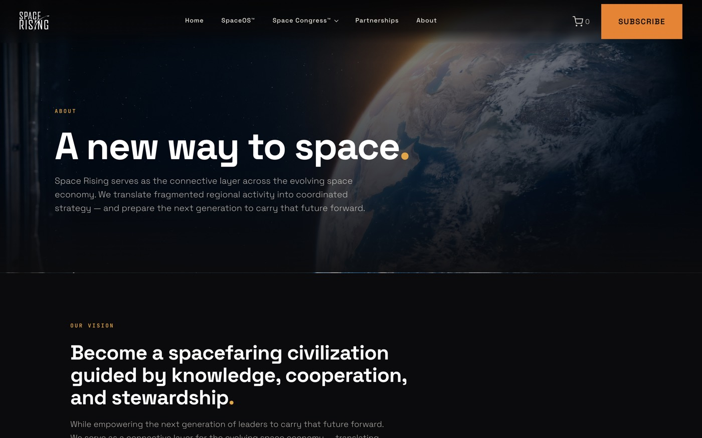
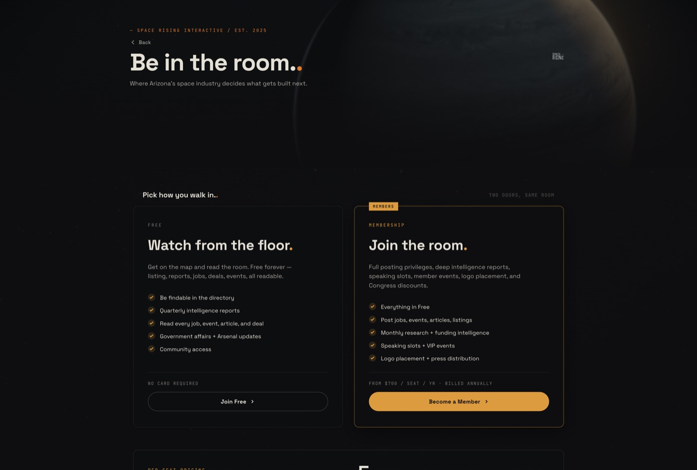
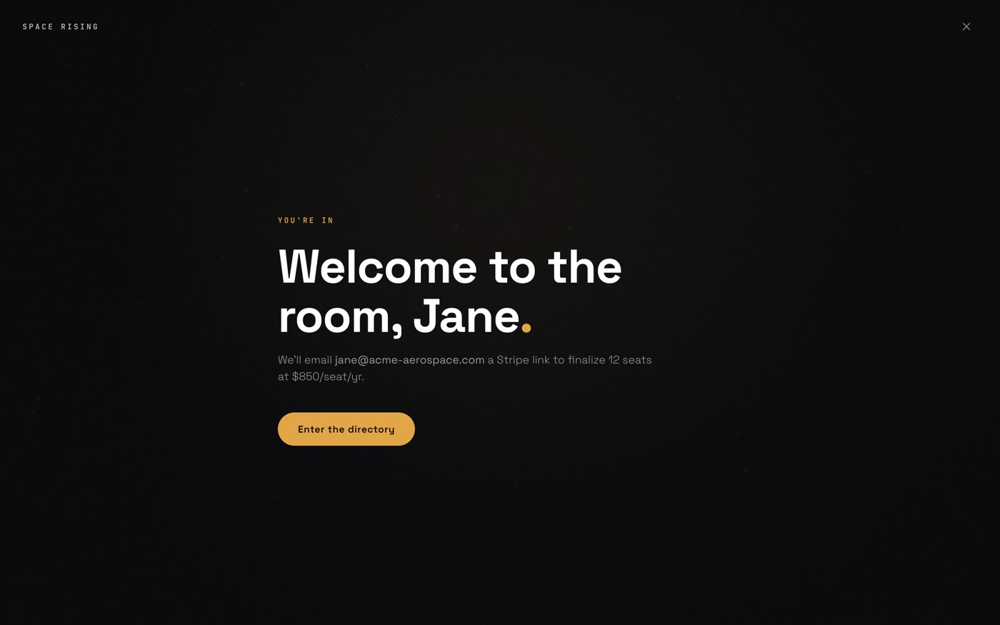
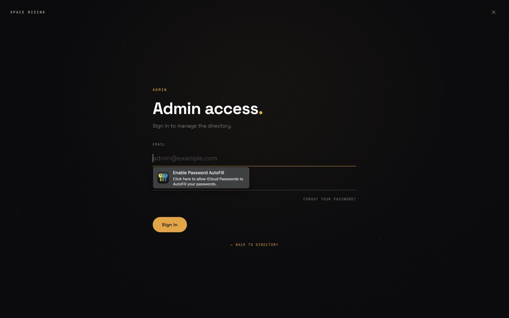
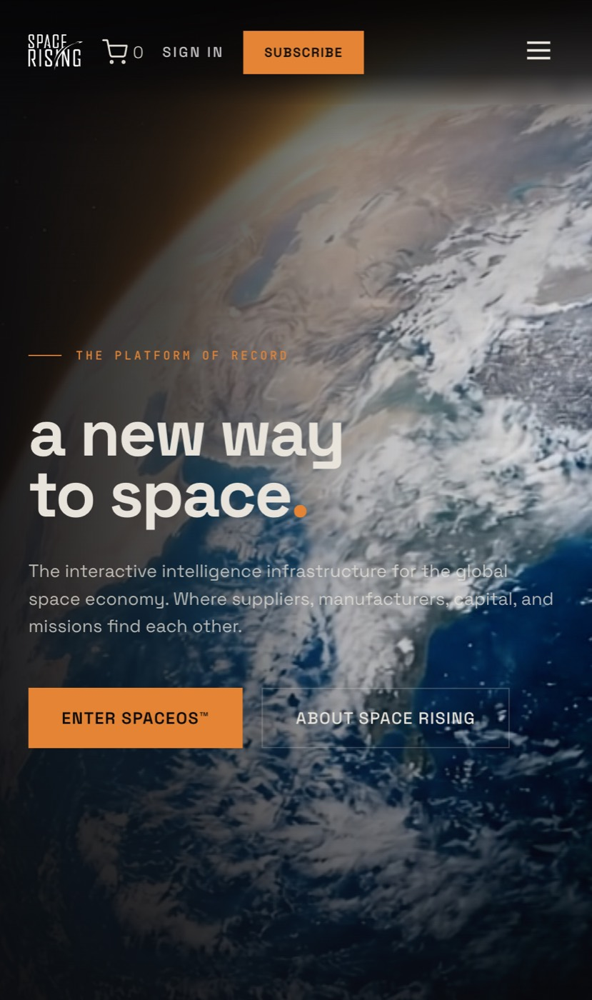

In seven days Space Rising's public face went from a working prototype to a live platform of record. The marketing site, the Space OS directory, membership, signup, payments and a motion layer all shipped — and the new look went live as the default at spacerising.org. Here's everything, in detail, and an honest map of what's still ahead.
The whole public surface moved from the old look to the new National Geographic–style editorial design — and we flipped it on as the default. Deep-ink ground, warm bone text, a single amber accent, real photography in every zone. spacerising.org now looks like the platform of record for the space industry, not another blue-link directory.


Ten rounds, each one shippable on its own and verified live before the next began. Nothing was rebuilt in the dark — the old site stayed running the entire time as a safety net until the new one was ready to take over.
Both the marketing site and the directory were cloned, pixel-for-pixel, onto a new set of "V2" pages. Zero visual change on purpose — this gave us a complete second copy to rebuild on while the live site kept serving visitors untouched. The safety net for the whole week.
The new look's foundation: a single typeface (Space Grotesk) for headlines and body, a warmer near-black background, bone-colored text, and one disciplined amber accent — no second color anywhere. The "period treatment" on headings ("Companies." "Reports.") became a signature. This is the editorial DNA every page now inherits.
Twelve custom hero images generated to a locked house style — Earth from orbit, the sun's corona, rockets at ascent, asteroid fields, starfields. Deep cool ground, one warm key light, photographic grain, no cheesy glow or lens flare. Because the subject of the space industry is planets and rockets, the editorial look is earned, not borrowed. Total cost: about $1.50.
The company list was rebuilt as a clean, single-row directory with an Earth-from-orbit hero, and we added instant live search — type "Phoenix," "Tucson," or "ITAR" and the list filters as you go, matching on name, city, state, sector and certifications all at once. The old "loading…" search delay is gone. This is the moment the directory started feeling like a real tool.
The biggest round of the week. Jobs, Events, Reports, Marketplace and the Deal Bank all shipped as full pages sharing one navigation and one visual language. A real membership page landed with tier cards and pricing. A full-screen, step-by-step signup flow went in — five steps for free members, eight for premium — ending on a "Welcome to the room" moment. Company profile pages got their own detailed template. And the payment flow was wired end-to-end through Stripe.
All eight marketing pages — About, Space OS, Arizona, Space Congress, Partnerships, Events, Media and Sign Up — rebuilt in the new editorial style with proper navigation between them and a footer call-to-action that pulls visitors into the directory. Leadership grids, partner lists, the Areas-of-Interest signup chips — all reworked to feel like one publication.
A motion layer for the home page: a generated Earth-from-orbit video drifting behind the hero, tied to scroll so it moves with you — with a still-image fallback for anyone who prefers reduced motion. Plus the editorial touches that make it feel considered: numbers that count up as they scroll into view, content that fades in with a gentle stagger, cards that lift on hover. Restrained on purpose — authority, not fireworks.
The new design was promoted to the default. Visitors hitting spacerising.org now land on the new site and the new Space OS directory automatically. The old version was kept archived for instant rollback and so existing links never break. This is the moment the week's work became the real, public Space Rising.
The post-launch sweep: a handful of links still pointing at the old pages were fixed, the Space OS tiles (Companies / Jobs / Events / Resources) were wired to actually go somewhere, and the Media and Events lists were connected to live, up-to-date content with working outbound links.
With the new site live, the week turned to finishing the rest. Pricing was finalized to a company-size model — small, mid and large, each with an annual or monthly option. The sign-in page was rebuilt in the new editorial style. The admin panel and member portal were reskinned to match the front door — same dark ground, Space Grotesk and amber wordmark — so the back office no longer looks like a different product. Articles and Grants pages were added, and the post-submission forms across Jobs, Events and Marketplace were wired up.
A real bug, found and fixed: newly joined free companies weren't showing up in the directory because they were being saved without a proper home tag, and approving them never set it either. Both paths were corrected and a backfill recovered nine companies that had been stranded — the live directory went from 50 to 59. Members can now also edit their own company information.
Every other sourcing directory defaults to a white page and blue links. A dark editorial publication in this category is the wedge — it signals "platform of record" before anyone reads a word.





No stock photos. Every hero on the site comes from a custom-generated library built to one house style — so the look is unmistakably Space Rising and nobody else.
This was checked against the live site and the real code before it was written — not from memory. The short version: most of what was unfinished a week ago is now done and live. Here is the verified state, and the genuinely open items, separated honestly.
The Stripe keys are set and the checkout flow is wired end to end. Before pushing premium hard, it's worth running a single real join → pay → upgraded transaction to confirm it's in live mode (not test) and the webhook flips the account as expected.
Caught while walking the live site: a company asset (a logo) returns a "not found" in the background on profile pages, and each row in the directory list shows a stray "0" where a count belongs. Both are cosmetic and quick — no impact on the data itself.
The generated video hero lives on the home page today; the directory and the eight marketing pages still use beautiful still images. If we want it, the same restrained motion can extend across those surfaces — an enhancement, not a gap.
The Deal Bank is live with real deals; its richer data views are a later phase on the platform side. And one old-style member screen (a legacy portal route) still exists as a backward-compatibility fallback and can be retired.